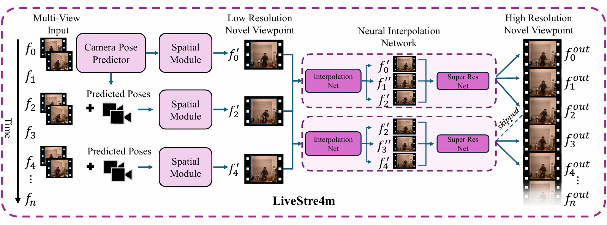
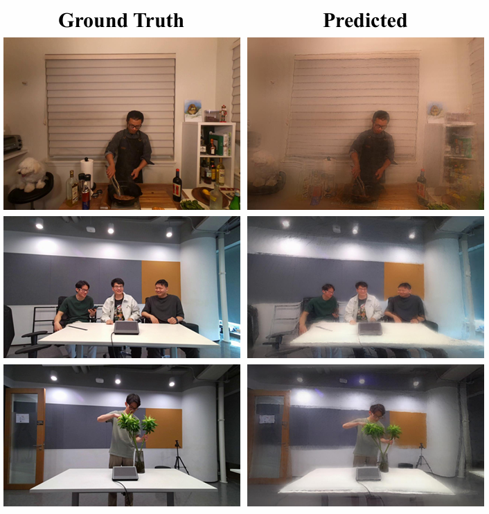

3DMV@CVPRW 2026
1AIMSGroup, Department of Electrical Engineering, Eindhoven University of Technology
LiveStre4m is a feed-forward model for real-time novel view synthesis (NVS) that enables temporally consistent live streaming from as few as two unposed, sparse multi-view inputs by predicting camera parameters directly from RGB images. By combining a multi-view vision transformer for 3D scene reconstruction with a diffusion-transformer interpolation module, the system achieves an average reconstruction time of 0.07s per frame at 1024x768 resolution, vastly outperforming optimization-based dynamic scene representation methods in runtime.

Figure 1. Illustration of the proposed LiveStre4m method, a feed-forward model for live-streaming novel viewpoint video from two or more low-resolution input streams.
LiveStre4m prioritizes efficiency, synthesizing the target viewpoint using only two neighboring input views, without requiring optimization or ground-truth camera parameters. It demonstrates a remarkable improvement in efficiency, operating in 0.14 seconds per frame on complex dynamic scenes, approximately 55x faster than 4DGS and 19x faster than IGS.

Figure 2. Qualitative results produced by LiveStre4m on dynamic scenes.
Quantitative comparison against optimization methods on the Neural3DVideo dataset on a single A100 GPU.
| Category | Method | Runtime (s) ↓ | PSNR ↑ | Camera Free | #Views |
|---|---|---|---|---|---|
| Video Optimization | K-planes | 48.00 | 32.17 | ❌ | >19 |
| 4DGS | 7.80 | 32.70 | ❌ | ≥19 | |
| Spacetime-GS | 48.00 | 33.71 | ❌ | ≥19 | |
| Frame Optimization | StreamRF | 15.00 | 32.09 | ❌ | >19 |
| 3DGStream | 16.93 | 32.75 | ❌ | ≥19 | |
| IGS | 2.67 | 33.89 | ❌ | ≥19 | |
| Feed-forward | LiveStre4m (Ours) | 0.14 | 20.64 | ✅ | 2 |
(Note: MeetRoom results follow a similar trend, where LiveStre4m operates in 0.10s using only 2 views.)
Comparison of feed-forward, camera-free scene reconstruction methods on a single H100 GPU.
| Dataset | Method | Runtime (s) ↓ | PSNR ↑ | Resolution | Pose Free | #Views |
|---|---|---|---|---|---|---|
| Neural3DVideo | FLARE | 0.249 | 21.45 | 512x384 | ✅ | 2 |
| LiveStre4m (Ours) | 0.062 | 22.44 | 512x384 | ✅ | 2 | |
| LiveStre4m (Ours) | 0.074 | 21.11 | 1024x768 | ✅ | 2 | |
| MeetRoom | FLARE | 0.243 | 16.65 | 512x384 | ✅ | 2 |
| LiveStre4m (Ours) | 0.062 | 19.32 | 512x384 | ✅ | 2 | |
| LiveStre4m (Ours) | 0.074 | 18.65 | 1024x768 | ✅ | 2 |
@misc{quesado2026livestre4mfeedforwardlivestreaming,
title={LiveStre4m: Feed-Forward Live Streaming of Novel Views from Unposed Multi-View Video},
author={Pedro Quesado and Erkut Akdag and Yasaman Kashefbahrami and Willem Menu and Egor Bondarev},
year={2026},
eprint={2604.06740},
archivePrefix={arXiv},
primaryClass={cs.CV},
url={https://arxiv.org/abs/2604.06740},
}